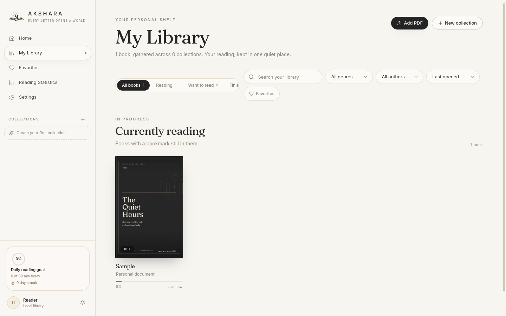

Local by design
Your PDFs live on your computer. Nothing is uploaded, ever.
Version 1.0.1 · Free & open source
A calm, local-first PDF reader for your desktop. Import your own books, read without distractions, and keep your highlights — your files never leave your computer.

A quiet place to read
No feed, no storefront, no recommendations. Just the books you brought, in a room built to disappear while you read.
What's inside
Your PDFs live on your computer. Nothing is uploaded, ever.
Warm themes, comfortable type, page or width fit, and a toolbar that steps aside.
Select a passage to keep it, or write a thought beside it. Your notes stay on the page.
Collections, reading statuses, favorites, and search for the books you actually read.
An optional account carries progress and highlights between computers — never the files.
Paper, sepia, and night reading themes, plus app-wide light, dark, or system.
Privacy, plainly
Akshara has no server for your files, no analytics, and no ads. The only thing that can sync is reading metadata — and only if you ask it to.
Sync is protected by row-level security in the database. No service key is ever shipped with the app.
Download
Free, open source, and about 100 MB. Pick your platform.
Windows 10 or 11, 64-bit.
Self-updating. SmartScreen may ask once — choose More info → Run anyway.
macOS 11 Big Sur or newer.
Unsigned for now — right-click the app and choose Open the first time.
Ubuntu, Debian, Fedora, and similar.
Ubuntu 24.04 needs libfuse2t64 for the AppImage.
All versions, checksums, and release notes on GitHub Windows and the AppImage update themselves. The .deb updates through apt.
FAQ
Yes. It is MIT licensed, with no paid tier, no ads, and no account requirement.
No. Reading, the library, highlights, and notes all work signed out. An account only adds sync between computers.
Inside Akshara's local profile: ~/.config/akshara on
Linux, %APPDATA%\akshara on Windows, and
~/Library/Application Support/akshara on macOS. PDF
files are never uploaded.
Yes. The library, reader, notes, and progress work without a connection. Changes made offline sync when you reconnect.
Not yet. Akshara 1.0 imports PDFs only; EPUB support is in progress.
Not yet. Library search works today; in-book search is the next major reader feature.
Windows and the Linux AppImage download updates in the background and offer to restart. The .deb updates through your package manager. macOS updates need a signed build, so current builds link to the release page instead.
No. Akshara is a desktop app for Windows, macOS, and Linux. PDFs stay on the device that imported them.